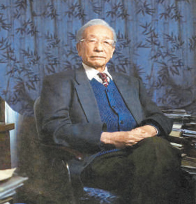
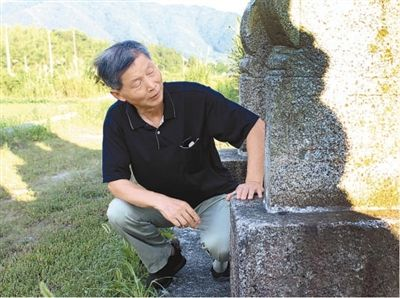
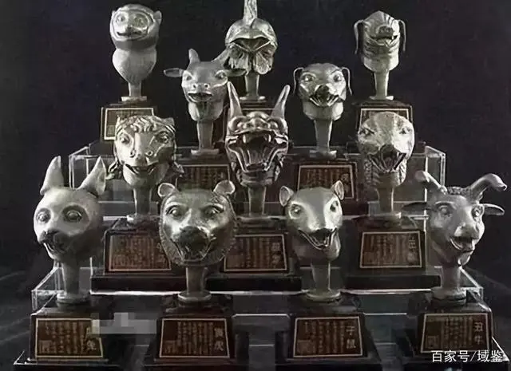

谢辰生——守护文物 倾尽一生
“文物的保护是第一位的，没有保护就没有研究。”谢辰生把郑振铎这句话记了一辈子。 谢辰生是新中国一系列文物法规制定的主要参与者和执笔人，也是我国文物事业许多重大决策的见证者和当事人。 他曾多次说：“我一直坚信保护文物就是守护国家。”他参与起草、修订《中华人民共和国文物保护法》，积极推动将 “保护为主、抢救第一、合理利用、加强管理”的文物工作方针写入法律。1994年离休后，他又为文物保护奔走呼吁、 忘我工作、不遗余力。
详细>>


何鸿燊
澳门“赌王”何鸿燊于2020年5月26日去世。在各个媒体的报道中，何先生的头衔几乎都是“爱国企业家”，这与他多年 持续捐资内地的义举密不可分。而在各项捐资中，最引人瞩目的无疑是分两次共斥资7500余万港币，购回了圆明园猪首、马首两尊兽首。
详细>>